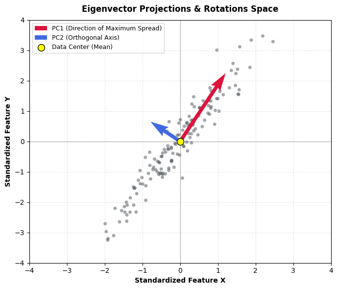
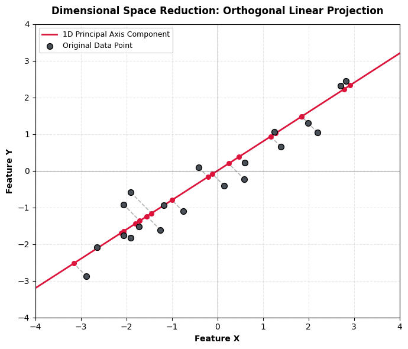

Overview
Principal Component Analysis (PCA) serves as a foundational unsupervised linear transformation technique designed to simplify high-dimensional datasets by projecting multi-variable instances onto a set of brand new, uncorrelated coordinate axes called principal components. At the absolute structural heart of this dimensionality reduction framework sit two core linear algebra entities: eigenvectors and eigenvalues. When a dataset's multi-dimensional covariance matrix is computed, eigenvectors dictate the directional orientation and geometric tilt of the new orthogonal axes. As conceptually visualized in Figure 1, the red arrow representing Principal Component 1 (PC1) is the dominant eigenvector that rotates to align directly with the maximum variance of the point cloud, while the blue arrow representing Principal Component 2 (PC2) is a secondary eigenvector fixed at a strict right angle to capture the remaining orthogonal spread. Paired alongside these directional vectors, eigenvalues serve as scalar multipliers that quantify the absolute magnitude of variance captured along each PC. By calculating these values, the algorithm determines the informational importance of each component, enabling analysts to retain axes with large eigenvalues while discarding those with low values that contain negligible data variation.

High-dimensional tracking data frequently suffers from the "curse of dimensionality," an analytical phenomenon where sparse data spaces, data redundancy, and multi-collinear variables degrade statistical modeling performance and make clean visualization impossible. When a dataset contains dozens of closely correlated metrics, distances between individual observations become distorted, and identifying genuine underlying behavioral patterns becomes exceedingly difficult. Reducing the dimensionality of the data addresses these systemic challenges by compressing overlapping, repetitive variables into a highly condensed, low-dimensional coordinate plane. As illustrated in the orthogonal projection mechanism of Figure 2, this geometric compression flattens the cloud down onto an optimized coordinate line, filtering out background noise and retaining major variance patterns without losing vital structural information. This simplification effectively preserves the macro-level relationships of the data points, enabling clear, low-dimensional plotting and more efficient subsequent modeling.

Within the scope of this research project, PCA is specifically deployed to synthesize and streamline 15 highly collinear situational challenge rate features engineered during data preparation into two discrete, low-dimensional dimensions: Principal Component 1 and Principal Component 2. Because a player's challenge tendencies across the selected situational rate features are heavily interdependent, evaluating all 15 features simultaneously introduces immense multi-collinear inflation. Utilizing PCA to collapse these overlapping splits transforms a massive, uninterpretable matrix of fractional metrics into two clear, orthogonal behavioral axes. This spatial compression provides powerful analytical benefits, providing a clean 2D eigenvector canvas to plot individual athletes, uncovering the primary hidden variables driving automated strike-zone challenge strategy, and creating optimized, decorrelated feature sets to feed into subsequent machine learning classifiers without the risk of overfitting.
Data Prep
Features are continuous, normalized via Z-scores, and filtered using a minimum challenge opportunity threshold of 100 to isolate robust situational tracking rates for batters and catchers. Target performance fields are withheld during the fit to ensure structural habits drive the projections. Access full datasets via the project repository links.
Dataset Links:
- Full-Season Batting Splits CSV: MLBData-ABSSituationalSplits-Batters-FullSeason.csv
- Full-Season Catching Splits CSV: MLBData-ABSSituationalSplits-Catchers-FullSeason.csv